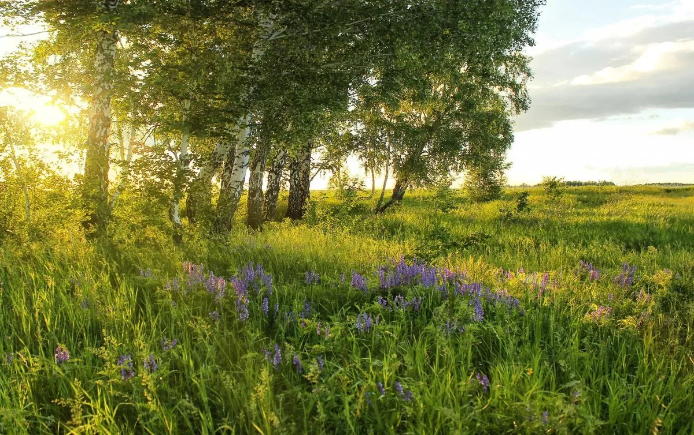
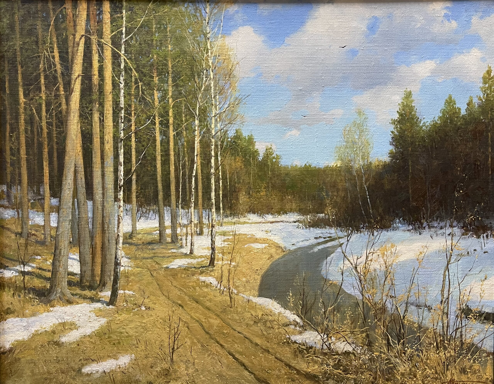

Зима: уют или испытание?
Снег и праздники против мороза и короткого дня. Какая сторона убедит тебя?
ПодробнееКлуб открытых дебатов
Три сезона. Две стороны. А на чьей стороне ты?
Снег и праздники против мороза и короткого дня. Какая сторона убедит тебя?
Подробнее
Одна команда расскажет о путешествиях, долгих прогулках и тёплых вечерах. Другая напомнит о духоте, комарах и бессонных ночах. Обсудим, всегда ли самое ожидаемое время года оправдывает надежды.
Подробнее
Первые тёплые дни и пробуждение природы - или лужи, аллергия и непредсказуемая погода? Две команды попробуют доказать, стоит ли ждать весну с нетерпением.
ПодробнееВстречаемся в студенческом клубе. Вход свободный. На каждой встрече две команды выступают за и против сезона, а зрители задают вопросы и выбирают самые убедительные аргументы.
За: зимний спорт, снег и праздничная атмосфера. Против: мороз, гололёд и нехватка солнца.
За: отдых, путешествия и долгий световой день. Против: жара, духота и насекомые.
За: тепло, зелень и новые силы. Против: слякоть, аллергия и резкие перемены погоды.
В инструментах разработчика выберите зимнюю карточку и замените box-sizing: border-box на content-box. Остальные свойства не меняйте.
Прогноз: с border-box внешняя ширина 300px, с content-box - 344px. Проверьте ширину карточки в инструментах разработчика. Затем верните border-box, чтобы три карточки снова стояли в один ряд.
У первого блока нижний отступ 24px, у второго верхний - 40px. Расстояние между ними - 40px.